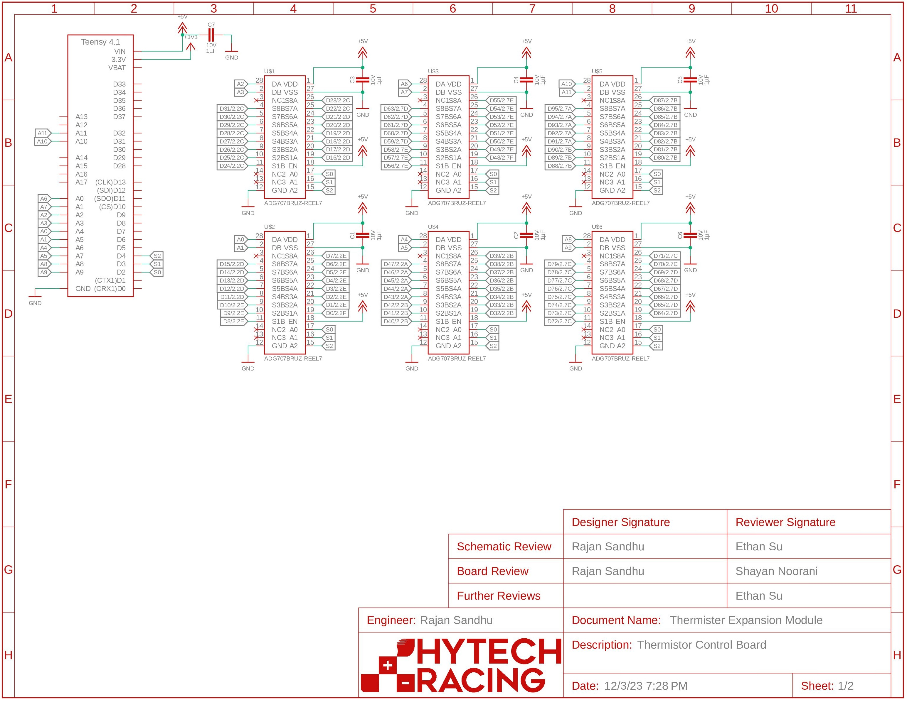
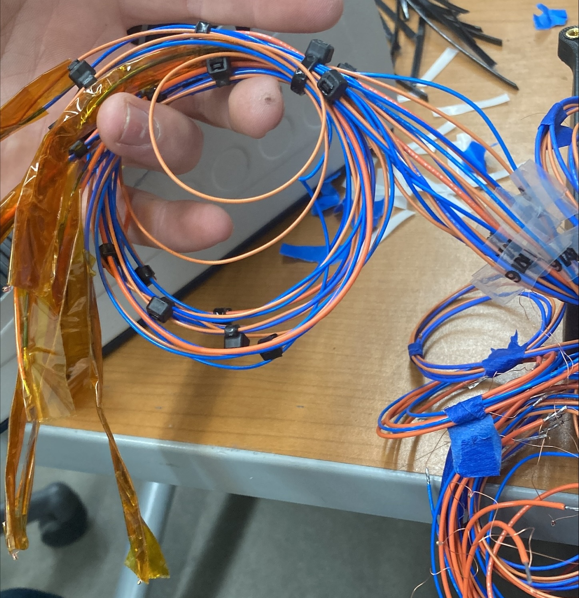
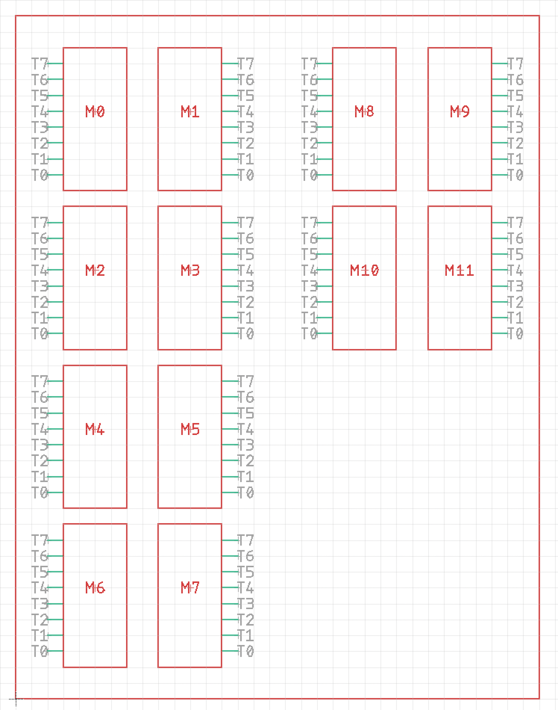
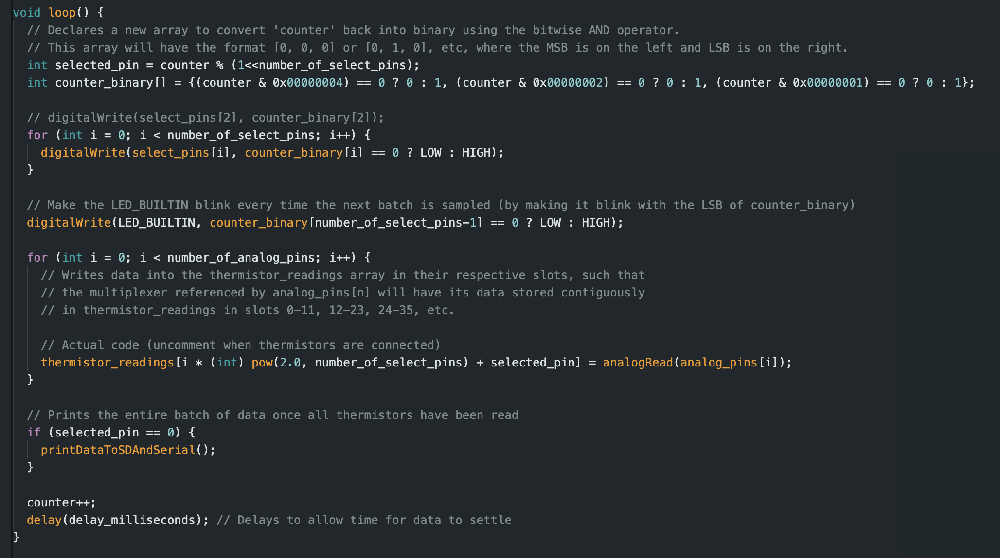
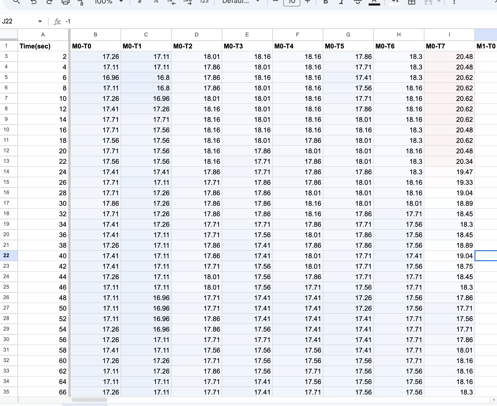

Justin Hwang
Table of Contents
Computer Engineering (Spring 2027)
Concentrations in Computing Hardware and Robotics
Minor in Korean Language (Fall 2024)
About Me
I am a first-year Computer Engineering major with concentrations in Computing Hardware and Robotics. I chose this field of study because I wanted to learn how computers work on a fundamental level, and to develop programming skills with concrete applications.
One of these physical applications is with Hytech Racing, Georgia Tech's Electric FSAE team. Over the past two semesters, I have learned electric engineering fundamentals and contributed to a revamped firmware system.
In my free time, I play intramural sports, sing in Georgia Tech Chamber Choir, and attend meetings for a campus ministry (Reformed University Fellowship).
I strive to develop both technical and communication skills in professional engineering environments. I actively seek situations where I am the least experienced. I believe that my detail-orientedness, discipline, and curiosity will allow me to make meaningful contributions to any engineering team.
Resume
Career Goals
Technical Projects
Thermistor Board Project (Hytech Racing)
For Hytech, we needed an array of thermistors to measure temperature data at many different points. Initially, this was designed to measure data in an array between two large aluminum plates to to verify their thermal properties. We could not simply use a thermal camera, since this we needed to measure data between solid plates.
Requirements
In order for our solution to be viable, we needed to meet the following criteria.
- Record temperature data at >60 locations. (One thermistor every 2 square inches on a 9" x 13" plate)
- Record temperature data for at least 30 minutes.
- Save data to a CSV file for later analysis.
Design
We decided to use an Arduino Teensy 4.1 with analog multiplexers to record the data. Since the Arduino does not have sufficient analog pins for our 60+ thermistors, we instead connect the Teensy to several 8x1 MUXs. We designed our board to record data from 96 thermistors and record it in a Micro-SD card on the Teensy.
Build Process
We used Autodesk EAGLE to design the a PCB. We had six 16x2 MUXes connected to the Teensy.

Figure 1: EAGLE Board Diagram. PDF can be found here
After ordering the board, we had to solder each of the thermistor wires to blue/orange wires, Molex crimp the other ends of the wires, and then connect them to 16-pin Molex connectors. We needed to use Kapton tape to insulate the leads on each thermistor.

Figure 2: Soldered, crimped, insulated, labaled bundle of 8 thermistors

Figure 3: Thermistor naming diagram to organize data
After connecting each bundle to the board, we wrote Arduino code to select each pin, print the data on the Serial monitor.

Figure 4: Excert of main loop() function. Full code can be found here
Initially, we wrote a python script to read the data from the Serial monitor and save it to a CSV on the computer while it is plugged in. However, since the test needed to run for an extended period of time, we decided that it would be better if the Teensy could save the data without a computer being plugged in, so we saved the data locally to a micro SD card.
Since it was saved as a CSV, we could analyze the data in a spreadsheet.

Figure 5: Thermistor data logged in a spreadsheet with slight conditional formatting.
Coding Process
We then wrote Arduino code to select each pin on each MUX, read the analog value, and then print it to the Serial Monitor.